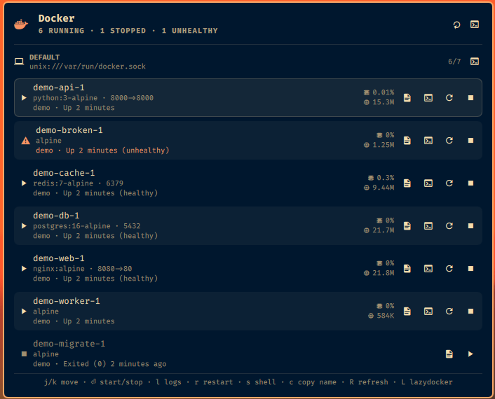

Dockarchy watches the Docker daemon on your laptop and the ones on your servers over SSH — Podman too — and puts them in the Omarchy bar: Compose projects, live stats, logs, shell, image updates and notifications, all without leaving the desktop.
omarchy plugin add https://github.com/XNinety9/dockarchy.git --enable

Most bar widgets show docker ps for the machine they run on. Dockarchy was built for the other case: the containers that matter are on a server somewhere, and you still want them one click away.
A server is a Docker context with an ssh:// endpoint — nothing to install there. Dockarchy polls every host in parallel, and for remote ones it opens one SSH session per poll that runs docker ps and docker stats on the server. (Polling through docker --context would open a session per container and get you banned by fail2ban. Ask us how we know.)
Containers fold under their Compose project. A project row starts, stops or restarts every member in a single Docker call, tails compose logs, and pulls newer images then recreates the services. Fold state is remembered.
Every few hours it compares each running image's digest with what the registry serves for that tag — one anonymous HEAD per image, from the host itself. Containers with a newer image get a badge; p pulls and recreates.
Mouse or keyboard, your call. The footer always shows the keys that apply to the selected row.
/ then type. Every word must match name, image, project, state or status — unhealthy lists the sick ones everywhere.
CPU, memory, network, disk or PIDs — pick the metrics — over a configurable number of polls, with min/avg/max on hover.
A container turns unhealthy or dies on its own, a host stops answering — you hear about it. Stops you asked for stay quiet. Recoveries optional.
l tails logs, s drops you into bash (or sh) — in your terminal, over your own SSH config for remote hosts.
8096→8096 under a name opens http://host:8096 in the browser, host taken from the context. o opens the first one.
Right-click or m: ports, logs, shell, inspect, restart, copy name or ID, kill or remove — the destructive ones behind a confirmation.
A Python-style template next to the whale: {running}/{total} · {errors} err. Fold hosts, hide stopped containers, sort by state, name, CPU or memory.
List Podman hosts — local or over SSH — next to your Docker contexts. Same rows, same actions, podman compose for projects.
bin/dockarchy-menu install adds a Docker submenu to the Omarchy menu, on request, and remove takes it back out.
Vim-flavoured, and the footer reminds you.
compose logs -f on a project)They live in the widget's entry in ~/.config/omarchy/shell.json. Change them in the shell's settings UI or with omarchy bar set x99.dockarchy <key> <value> — they apply live.
| Key | Default | What it does |
|---|---|---|
contexts | all | Docker contexts to monitor. |
podmanHosts | none | Podman hosts: local and/or user@host[:port]. |
refreshIntervalSec | 15 | Poll interval, 5–3600 s. |
timeoutSec | 10 | Per-host limit before it is marked unreachable. |
showAll | true | Include stopped containers. |
showStats | true | CPU % and memory per running container (docker stats). |
showSparklines | true | Trend lines next to the stats. |
sparkMetrics | CPU,Memory | Which metrics: CPU, Memory, Network, Disk, PIDs. |
sparkSamples | 20 | Polls a sparkline spans. |
groupByProject | true | Fold containers under their Compose project. |
sortBy | State | State, Name, CPU or Memory. |
notifications | Problems | Off, Problems, or Problems and recoveries. |
updateCheckHours | 6 | Hours between registry checks for newer images; 0 disables. |
barFormat | {running} | Bar label template: {running} {stopped} {total} {unhealthy} {unreachable} {errors} {updates} {hosts}. |
panelWidth / panelMaxHeight | 700 / 800 | Popup size; it grows with content up to the max, then scrolls. |
alternateRows | false | Shade every other row. |
runningAccent | false | Tint running containers with the theme's accent colour. |
Omarchy 4.x. You need the docker CLI and jq (both in Omarchy's base) and access to the Docker socket as your user. No sudo or pkexec is required.
omarchy plugin add https://github.com/XNinety9/dockarchy.git --enable
ssh into non-interactively works; add ControlMaster to your ~/.ssh/config for it so the one SSH session per poll is reused.docker context create mainserv --docker "host=ssh://you@mainserv"
omarchy bar move x99.dockarchy --before omarchy.network
omarchy bar set x99.dockarchy barFormat '{running}/{total} · {errors} err'omarchy plugin remove x99.dockarchy